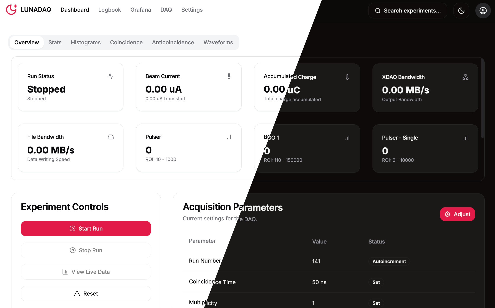

LUNA Experiment Data Acquisition System



Welcome to LunaDAQ, the modern data acquisition and visualization system developed for the LUNA (Laboratory for Underground Nuclear Astrophysics) experiment. This system integrates real-time data collection, analysis, and FAIR-compliant metadata management in a user-friendly web interface.
Documentation Hub
Section |
Description |
Link |
|---|---|---|
Installation |
Step-by-step guide for setting up LunaDAQ |
|
User Guide |
Comprehensive guide for operating the DAQ system |
|
System Details |
How LunaDAQ works internally |
|
Server Architecture |
Technical reference for developers |
|
Troubleshooting |
Common issues and solutions |
Key Capabilities
Real-time Data Acquisition from multiple detector channels
Interactive Visualization of spectra and waveforms
FAIR Metadata Management for experimental runs
Secure User Authentication with role-based access
Dockerized Analysis Pipeline with XDAQ integration
Support
For technical support or feature requests:
Jakub Skowroński: jakub.skowronski@pd.infn.it
Alessandro Compagnucci: alessandro.compagnucci@gssi.it